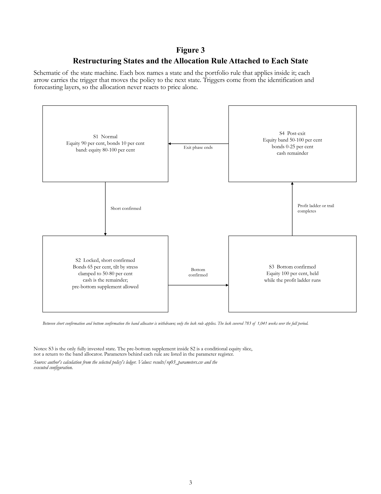

Financial stress identification, transition forecasting and state-dependent portfolio allocation
A three-stage decision chain, evaluated separately at each stage so that a failure in one link cannot hide behind success in another.
1 · Project overview
The chain answers three questions in sequence. RQ01 asks whether the economy is currently in a financially stressful state and where the stress comes from — domestic, global or both. RQ02 asks whether stress will start, whether it will end, and when the equity market reaches its bottom. RQ03 asks how a six-asset portfolio should be restructured given those signals, and whether the restructuring adds value against five passive benchmarks and a fully invested equity portfolio.
Data. Monthly financial-condition indicators for Belgium, Germany, Spain, Finland, France, Italy and the Netherlands; weekly total-return indices for three equity and two bond groups plus a cash proxy; European Systemic Risk Board stress labels, used only to score the result, never as an input.
Periods. Development runs from July 2005 to December 2019 (1,218 country-months, 800 calm). Evaluation runs from January 2020 to December 2024; labels stop in April 2021, so only 112 of 420 out-of-sample months can be scored. Months without a label are excluded from scoring and are never treated as calm.
2 · RQ01 — identifying financial stress
Three layers build one binary decision, and they are not equally weighted. Individual signals compare each indicator's standardised level, its three- and twelve-month change and its drawdown with source-specific quantiles, and vote up, down or sideways; a source is flagged strong when its level passes the strong quantile. Joint signals pair two indicators that are observed in the same month and whose movements match a motif, carrying both members' thresholds and the applicable publication lag. Pool integrates what is available and then applies the final rule — a country threshold on the pooled score, one joint confirmation that can only add stress, and one joint confirmation that can only remove it.
| period | TP | FN | FP | TN | FNR | FPR |
|---|---|---|---|---|---|---|
| DEV | 376 | 42 | 194 | 606 | 10.05 | 24.25 |
| OOS | 77 | 14 | 5 | 16 | 15.38 | 23.81 |
The layered structure is not decorative. Keeping only the country threshold lowers the false-alarm rate to 15.00% and raises the miss rate to 5.74%; adding the confirmation pair buys 5.02% miss rate for a much higher false-alarm rate; the exclusion pair then removes 27 alarms and costs 5.03 points of miss rate. The rule behaves as "threshold plus two filters", not as a vote.
| variant | TP | FN | FP | TN | FNR | FPR | alarms |
|---|---|---|---|---|---|---|---|
| Individual only (per-country threshold on the pooled score) | 394 | 24 | 120 | 680 | 5.74 | 15.00 | 514 |
| Individual + Joint (pair OR) | 397 | 21 | 200 | 600 | 5.02 | 25.00 | 597 |
| Pool (pair OR, excluded by the negative pair) | 376 | 42 | 194 | 606 | 10.05 | 24.25 | 570 |

Interpretation. The rule is silent in the calm, entry and peak phases and pays for that silence in recovery, where 43.78% of calm months raise an alarm. The pooled 10.05% and 24.25% average a rule that is either perfectly quiet or strongly over-sensitive.
Limitation. A development-window diagnostic; the out-of-sample score tape needed to repeat it is not part of this release.
The rule is conservative while the economy is calm or entering stress — no misses in the pre-entry, entry and peak phases — and pays for that in recovery, where 43.8% of calm months raise an alarm. Out of sample the false-alarm rate is stable (23.81%) while the miss rate rises to 15.38%: the rule lost sensitivity, not discipline. Only 112 labelled months support that statement, and the per-phase split cannot be reproduced because the out-of-sample score tape is not published here.
3 · RQ02 — forecasting transitions and the bottom
Entry asks whether stress starts within a fixed horizon; the horizon ladder runs from 45 down to 18 months and the published operating point uses 18. Exit asks whether the episode ends within three months and adds a duration term, because the probability of exit rises with the age of the episode. The bottom is not a probability model but a zone rule that requires independent factors to agree. In all three, Individual movements are accumulated over the horizon, Joint confirmations are only admitted when both members are published before the issue date, and Pool is the combination actually thresholded. A slow Long system feeds entry; a five-vote Short system, whose last vote is a last-short flag, feeds exit and bottom.
| task | period | threshold | n | TP | FN | FP | TN | FNR | FPR |
|---|---|---|---|---|---|---|---|---|---|
| ENTRY (18m) | DEV | 0.11 | 653 | 108 | 0 | 130.00 | 415.00 | 0.00 | 23.85 |
| ENTRY (18m) | OOS | 0.11 | 14 | 12 | 2 | — | — | 14.29 | — |
| EXIT (3m) | DEV | 0.03 | 418 | 18 | 0 | 87.00 | 313.00 | 0.00 | 21.75 |
| EXIT (3m) | OOS | 0.03 | 91 | 15 | 6 | 32.00 | 38.00 | 28.57 | 45.71 |

Interpretation. Entry buys its low miss rate with false alarms in development and cannot be scored on false alarms out of sample, where all 14 observations are positives. Exit degrades to 28.57% and 45.71%. The bottom zone keeps the trough inside the zone in one development forecast in four and one evaluation forecast in fifteen.
Limitation. Two of the five rates are undefined rather than zero, and the evaluation block rests on 14, 91 and 90 scorable observations.
Both models are calibrated towards recall: no episode is missed in development, at the cost of a false alarm in roughly one in four calm observations. Out of sample entry keeps a low miss rate (14.29%) but its false-alarm rate cannot be defined — all 14 scorable observations are positives, so an empty denominator is reported as missing, never as zero. Exit degrades on both dimensions (28.57% and 45.71%). The bottom rule hits 14 of 60 matured forecasts in development (23.33%) with a negative median lead time, meaning it identifies the zone but on average after the trough. Out of sample the block is scored: 6 of 90 matured forecasts contained the trough (6.67%), against 14 of 60 (23.33%) in development.
4 · RQ03 — state-dependent allocation
The Main Model is a four-state machine in which the permission to restructure changes with the state. Normal (S1) runs a band allocator: equity centred at 90% inside an 80–100% band driven by the volatility z-score and the stress probability, bonds 0–20%, cash the rest. Stress without a confirmed bottom (S2) withdraws that allocator and holds 50–80% bonds, the remainder in cash, with no equity. Short confirmation is what triggers the lock: between that week and bottom confirmation the portfolio is not re-optimised on new information, which prevents selling into the final decline and buying back higher, at the cost of 596 of 781 development weeks spent in that posture. Bottom confirmation (S3) activates the only fully invested state — equity 100% of NAV, held — after which a profit ladder of four 20% trims at +8%, +16%, +25% and +40%, a four-week cooldown, a 52-week minimum hold and a 10–15% trail returns the portfolio through the post-exit band (S4) to normal, with 26 consecutive normal weeks re-arming the cycle.


Interpretation. The diagram locates the lock: between short confirmation and bottom confirmation the band allocator is withdrawn and only the lock rule applies.
Limitation. The boxes state the rules as executed; parameter values are in the register below.
Four constraints act on every target: a hard weekly expected-shortfall cap of 2%, the state band clamps, a zero floor on cash (so no leverage), and a 10 basis point one-way transaction cost on realised turnover. Two parameters are often assumed to be active and are not: the risk-tolerance scaling table is disabled, and the probability branch of the cycle reset is inert by construction, so the cycle is re-armed by time rather than by a probability condition.

Interpretation. The policy is equity-heavy by design: the three equity sleeves hold about three quarters of NAV for most of the period, cash reaches 100% in ten weeks only, and the regime band shows a cycle rather than a one-way de-risking. The lock accounts for 783 of 1,041 weeks.
Limitation. Weekly weights are re-based to 100% for display, and the band records the states the executed configuration produced.
Parameter register
| Parameter / Threshold | Actual Value | Unit | Class |
|---|---|---|---|
| Allocation engine | four-state state-and-cycle allocator | — | Fixed assumption |
| Normal-state equity target | 0.9 | share of NAV | Calibrated |
| Normal-state bond target | 0.1 | share of NAV | Calibrated |
| Lock-state bond share (base) | 0.65 | share of NAV | Calibrated |
| Lock-state stress tilt | 0.1 | share per unit of P_S | Calibrated |
| Pre-bottom residual split | pro-rata | rule | Fixed assumption |
| Pre-bottom window | 26 | weeks | Calibrated |
| Pre-bottom cooldown | 4 | weeks | Calibrated |
| Pre-bottom stop | 0.1 | return | Calibrated |
| Bottom confirmation: normal probability | 0.995 | probability | Calibrated |
| Bottom confirmation: stress probability | 0.02 | probability | Calibrated |
| Bottom confirmation: volatility z-score | 2 | standard deviations | Calibrated |
| Bottom confirmation: drawdown tolerance | 0.05 | return | Calibrated |
| Bottom-state equity target | 1 | share of NAV | Calibrated |
| Recovery equity cap | 0.8 | share of NAV | Calibrated |
| Recovery normal-probability gate | 0.98 | probability | Calibrated |
| Recovery stress-probability gate | 0.02 | probability | Calibrated |
| State S4 high-volatility response | bonds absorb the shock | rule | Fixed assumption |
| Post-exit equity floor | 0.5 | share of NAV | Calibrated |
| Post-exit bond ceiling | 0.25 | share of NAV | Calibrated |
| Volatility-z direction | risk-off | sign | Fixed assumption |
| Profit-taking ladder | +8% / 20%; +16% / 20%; +25% / 20%; +40% / 20% | gain / share | Calibrated |
| Tranche cooldown | 4 | weeks | Calibrated |
| Minimum holding after the bottom | 52 | weeks | Calibrated |
| Profit trail | 0.1 | drawdown from peak | Calibrated |
| Runner activation | 2 | tranches completed | Calibrated |
| Runner trail | 0.15 | drawdown from peak | Calibrated |
| Profit proceeds destination | on | rule | Fixed assumption |
| Post-bottom equity cap | 1 | share of NAV | Calibrated |
| Post-bottom stop | 0.1 | return | Calibrated |
| Pre-bottom stop | 0.08 | return | Calibrated |
| Stop reference | equal-weight equity basket | rule | Fixed assumption |
| Hard expected-shortfall cap | 0.02 | weekly return | Calibrated |
| Pre-bottom ES overlay | — | rule | Fixed assumption |
| Bottom supplement switch | on | flag | Calibrated |
| Forced bottom entry | off | flag | Fixed assumption |
| Cycle reset window | 26 | weeks | Calibrated |
| Cycle reset normal-probability | 1.01 | probability | Fixed assumption |
| Risk-tolerance scaling | off | flag | Fixed assumption |
| Bottom trigger rule | first confirmed bottom | rule | Fixed assumption |
| Bottom lookback | 0 | weeks | Fixed assumption |
| Bottom ES bypass | on | flag | Fixed assumption |
| Lock-state bond band | 50 – 80 | share of NAV | Calculated |
| Transaction cost | 10 | basis points | Fixed assumption |

Interpretation. The main model compounds 3.9015 in development and 1.8059 in evaluation, against 2.5960 and 1.2611 for full equity and 1.678/1.087 for equal weights. The gap opens in the drawdowns, where the policy keeps equity and the benchmarks do not.
Limitation. Development benchmarks are terminal values because only end-of-window levels exist; the evaluation window was open when the model was chosen.
| period | weeks | POLICY | EW | IVOL | MVP | ERC | MaxDiv | EQUITY100 |
|---|---|---|---|---|---|---|---|---|
| DEV | 781 | 3.9015 | 1.6784 | 1.3592 | 1.2934 | 1.4548 | 1.3675 | 2.5960 |
| OOS | 260 | 1.8059 | 1.0867 | 1.0515 | 0.9892 | 1.0466 | 1.0417 | 1.2611 |
The model beats all five passive benchmarks and the fully invested equity portfolio in both windows: 3.9015 against 1.2934–1.6784 and 2.5960 in development, 1.8059 against 0.9892–1.0867 and 1.2611 out of sample, compounding to 5.6981 over the continuous path. The premium is paid for with risk: maximum drawdown of 32.84% and 14.30%, and the highest weekly expected shortfall of the six strategies in both windows. This is a return engine with a defensive overlay, not a risk-control device. Benchmarks are passive construction rules and are not subject to the lock.
| strategy | MDD_DEV | MDD_OOS | ES95_DEV | ES95_OOS |
|---|---|---|---|---|
| Main model | 0.3283 | 0.1430 | 0.0452 | 0.0395 |
| EW | 0.1943 | 0.1573 | 0.0198 | 0.0268 |
| IVOL | 0.0498 | 0.0737 | 0.0067 | 0.0091 |
| MVP | 0.0337 | 0.0819 | 0.0045 | 0.0061 |
| ERC | 0.0375 | 0.0597 | 0.0066 | 0.0068 |
| MaxDiv | 0.0342 | 0.0748 | 0.0052 | 0.0072 |

Interpretation. Terminal NAV ranks the main model first in both windows, with full equity second in both and the five passive rules near one.
Limitation. Terminal NAV ignores the path: the premium is earned with the deepest drawdown and the highest weekly expected shortfall of the group.
5 · Conclusions
Identification is the reliable link: 10% miss rate at a 25% false-alarm rate in development, with a stable false-alarm rate out of sample. Forecasting is the weak link: entry survives on the miss dimension but cannot be scored on false alarms, and exit and bottom degrade. Allocation adds value on return and costs value on risk. The lock is the distinctive design choice — refusing to restructure between short confirmation and bottom confirmation is what separates this policy from a band rebalancer. The evidence does not support independent out-of-sample validation, deployment without an owner-approved risk budget, or use of the bottom forecast as a timing signal.
6 · Reproducibility and limitations
Code, selected thresholds and the exact tables behind every figure are in the repository:
README.md, RAW_CODE/, THRESHOLD/, results/. The dataset is
not redistributed. Costs are fixed at 10 basis points one-way with no market impact, no borrow cost and no liquidity
constraint; the sample covers seven countries and one out-of-sample shock.
Research output, not an investment recommendation.